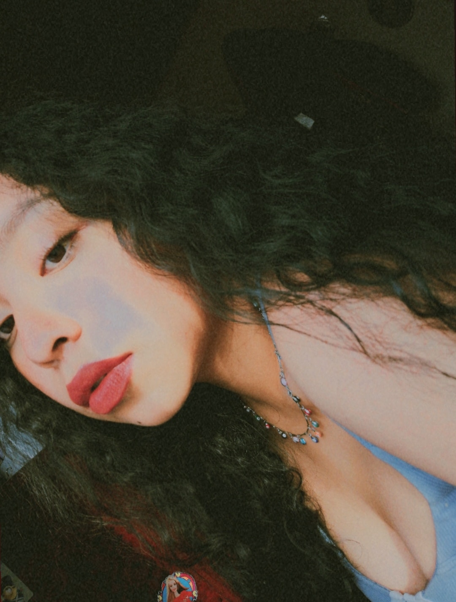

Hola, soy Paola Cabello Vega

Soy Paola, Estudiante de la Carrera de Ingeniería en Tecnológias De la Información y Comunicación, Mi enfoque principal se encuentra en el mundo del desarrollo frontend, donde transformo ideas creativas en experiencias interactivas y visualmente atractivas para los usuarios. Cada línea de código que escribo es una oportunidad de aprendizaje y mejora, ya que soy una entusiasta incansable del aprendizaje continuo, En mi viaje como estudiante de ingeniería de TICs, busco no solo adquirir conocimientos teóricos, sino también aplicarlos en proyectos prácticos que amplíen mi comprensión y habilidades
Desarrollo Web y Estudiante de ITICS
Mi enfoque equilibrado entre el estudio y la práctica me permite enfrentar desafíos con confianza y creatividad.
Bases de Datos
En el ámbito de las bases de datos, he adquirido habilidades para diseñar y gestionar eficientemente sistemas de almacenamiento de datos
Administracion de Redes
He desarrollado una comprensión integral de la arquitectura y el mantenimiento de redes. Puedo diseñar e implementar soluciones que garanticen una conectividad fluida y segura, optimizando la comunicación entre sistemas y dispositivos.